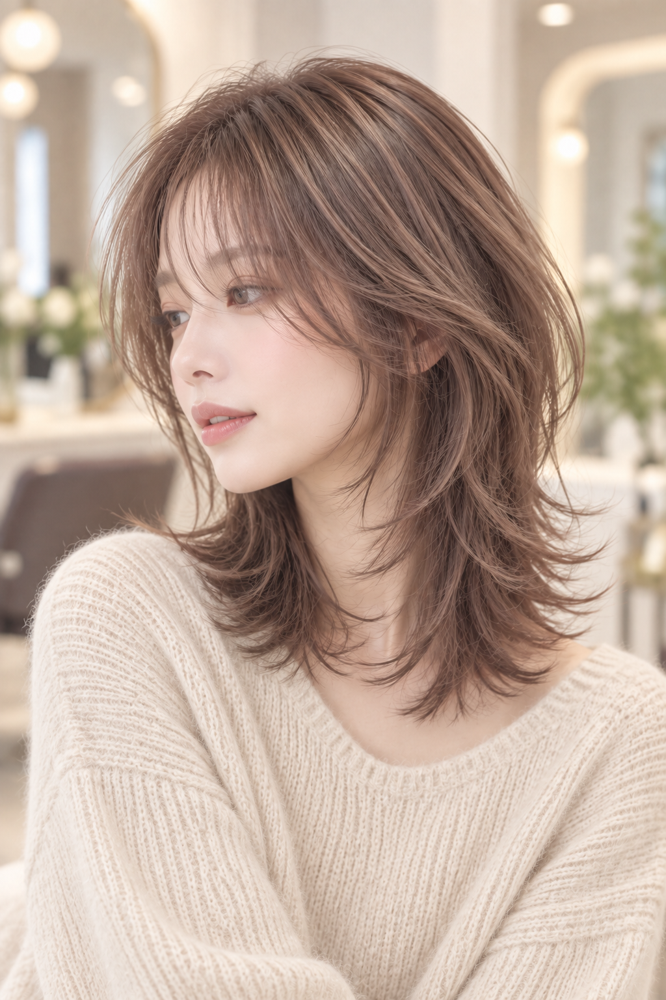
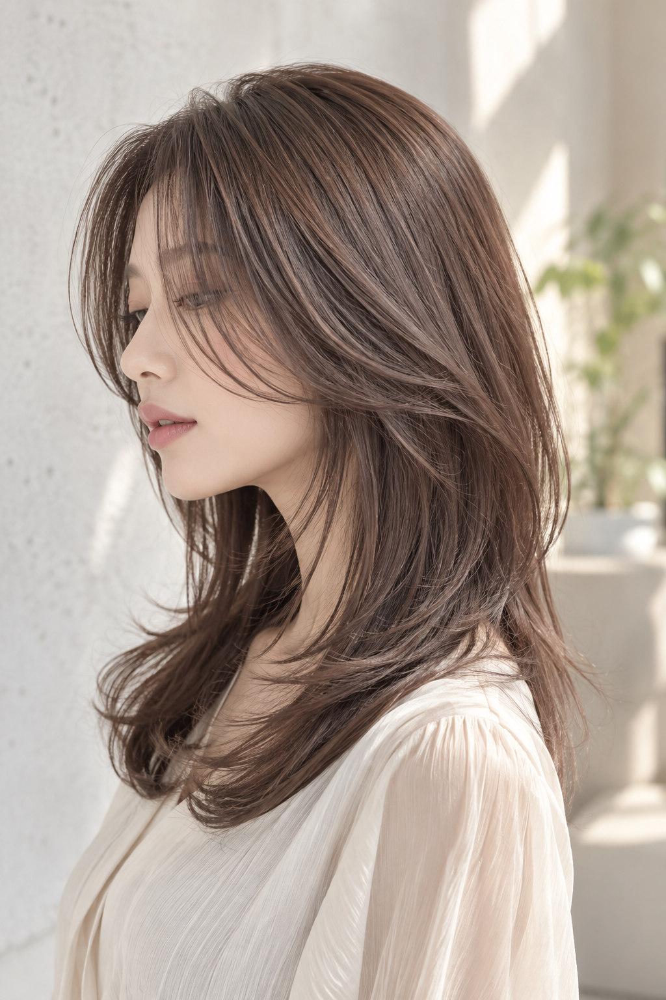

ピンクインナーレイヤー
顔まわりから毛先にかけて軽さを出したミディアムレイヤー。 さりげないピンクカラーをアクセントに、動きのあるカジュアルなスタイルに仕上げています。
小関 琉美
【得意なスタイル】
大人カジュアル
作り込みすぎない自然な質感と、ほどよく抜け感のあるデザインを大切に。
毎日のファッションやライフスタイルになじむ、扱いやすいカジュアルヘアをご提案します。
顔まわりのニュアンスや毛先の動きまで丁寧に整え、シンプルな中にもさりげなく今っぽさをプラス。
毎日のスタイリングもしやすい、自然体で楽しめる上品なヘアスタイルをお任せください。
頑張りすぎないのに雰囲気が出る、自然体で楽しめるスタイルをお任せください。
ヘアスタイル
顔まわりから毛先にかけて軽さを出したミディアムレイヤー。 さりげないピンクカラーをアクセントに、動きのあるカジュアルなスタイルに仕上げています。

顔まわりにしっかりレイヤーを入れた、軽やかなミディアムスタイル。 毛先の動きと柔らかな質感で、ナチュラルながらも今っぽい印象に。

ふんわりとしたトップと、毛先のくびれ感がポイントのレイヤースタイル。 自然な動きで、柔らかく女性らしい雰囲気に仕上げます。

顔まわりから毛先までなめらかにつながる、レイヤーロング。シンプルながら上品で抜け感のあるスタイル。